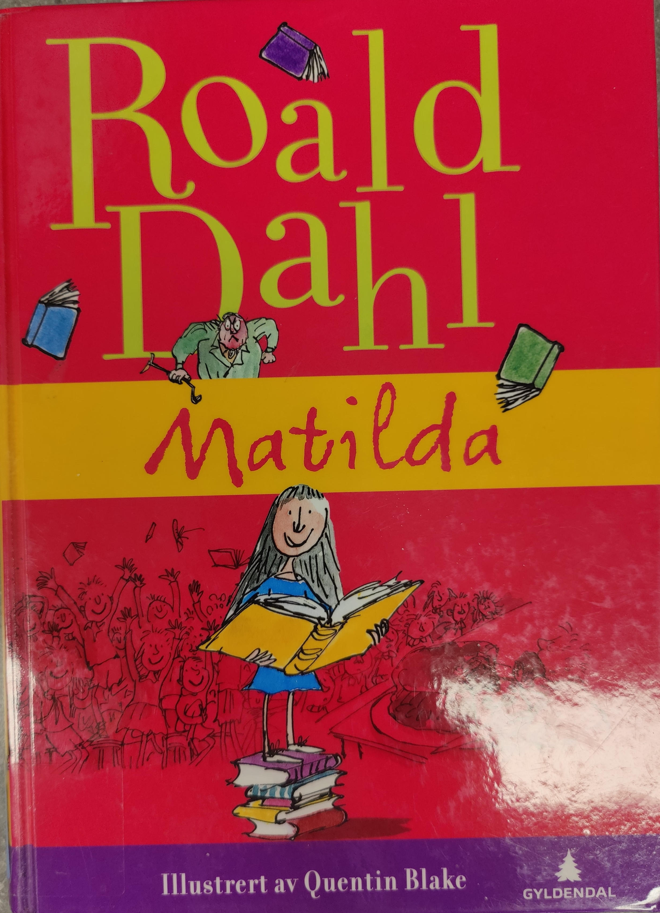

Matilda
Om boka
Matilda er en helt spesiell jente med usedvanlige evner.
Hun lærer å lese i en alder av 3 år, og bøker blir hennes store
glede og lidenskap. I tillegg har hun overnaturlige evner.
Ved hjelp av konsentrasjon klarer hun å flytte på gjenstander.
Men Matilda vokser opp i en familie som bare er opptatt av penger og TV.
De legger ikke merke til Matildas spesielle evner. Når Matilda begynner på
skolen, gleder hun seg og tror at nå skal hun endelig få lære mange nye ting.
Men hun ligger langt foran de andre elevene, og dessuten blir møte med
slemme og grufulle overlæreren frøken Pitbull som hater småbarn, en forferdelig opplevelse.
Hvordan skal hun klare å overleve på en skole der læreren synes
det er helt greit å kaste barna ut av vinduet eller torturere dem på andre mer bestialske måter?